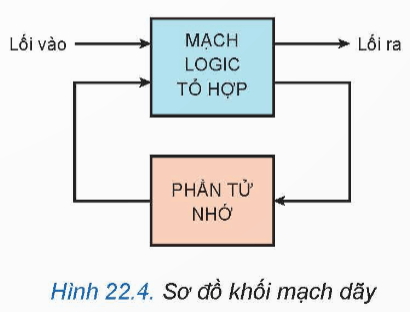
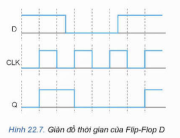
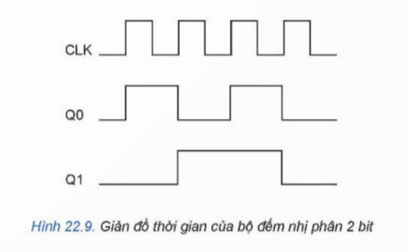

1. Khái niệm mạch dãy
Mạch dãy là mạch được tạo thành từ các cổng logic cơ bản, trong đó trạng thái đầu ra không chỉ phụ thuộc vào đầu vào hiện tại mà còn phụ thuộc vào trạng thái trước đó của mạch.
Phân loại
- Các phần tử nhớ
- Flip-Flop
- Bộ đếm
- Bộ ghi dịch
- Bộ chia tần

2. Mạch đếm
Flip-Flop (FF)
Flip-Flop là phần tử nhớ có hai trạng thái ổn định, tương ứng với logic 0 và 1.

Mạch đếm nhị phân dùng Flip-Flop D
Là thành phần cơ bản của hệ thống số, dùng để đếm xung và chia tần số tạo xung thời gian trong máy tính và các thiết bị thông tin.
